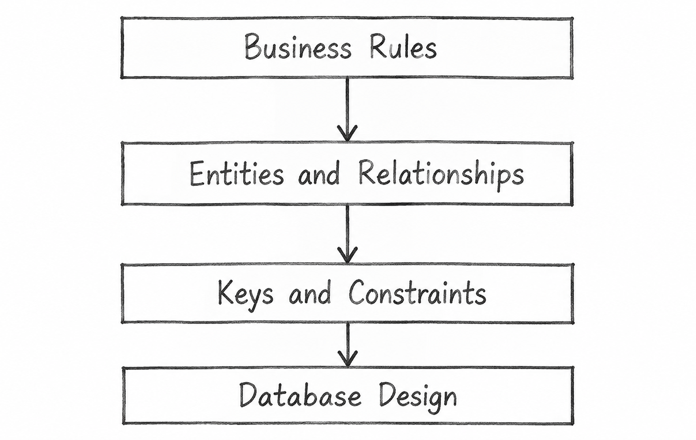

Q31. Explain the Concept of Business Rules and Their Role in Database Design.
1. Introduction
Business Rules are rules or conditions that define how an organization operates and how its data should be managed.
In database design, business rules help determine how data is stored, connected, and controlled.
Example: Each student must have a unique Student_ID and belong to one department.
2. Role of Business Rules in Database Design
1. Identifying Entities
Business rules help identify the main objects for which data must be stored.
Example: A college database contains STUDENT, COURSE, and DEPARTMENT entities.
2. Defining Relationships
Business rules explain how different entities are connected.
Example: One department can have many students, but each student belongs to one department.
3. Defining Keys and Constraints
Business rules help define keys and conditions that data must follow.
Example: Student_ID must be unique, and Marks must be between 0 and 100.
4. Maintaining Data Integrity
Business rules help keep database information correct and consistent.
Example: A student cannot enroll in a course that does not exist in the database.
5. Supporting Database Design
Business rules guide the creation of tables, keys, and relationships according to organizational requirements.
Example: The STUDENT table uses Student_ID as its primary key and Dept_ID as a foreign key.
3. Diagram: Role of Business Rules in Database Design
